6. Soil and Snow Temperatures¶
The first law of heat conduction is
(1)¶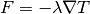
where  is the amount of heat conducted across a unit
cross-sectional area in unit time (W m-2),
is the amount of heat conducted across a unit
cross-sectional area in unit time (W m-2),
 is thermal conductivity (W m-1
K-1), and 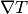 is the spatial gradient of
temperature (K m-1). In one-dimensional form
is thermal conductivity (W m-1
K-1), and 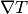 is the spatial gradient of
temperature (K m-1). In one-dimensional form
(2)¶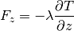
where  is in the vertical direction (m) and is positive
downward and 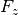 is positive upward. To account for
non-steady or transient conditions, the principle of energy conservation
in the form of the continuity equation is invoked as
is in the vertical direction (m) and is positive
downward and 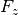 is positive upward. To account for
non-steady or transient conditions, the principle of energy conservation
in the form of the continuity equation is invoked as
(3)¶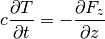
where  is the volumetric snow/soil heat capacity (J
m-3 K-1) and
is the volumetric snow/soil heat capacity (J
m-3 K-1) and  is time (s).
Combining equations and yields the second law of heat conduction in
one-dimensional form
is time (s).
Combining equations and yields the second law of heat conduction in
one-dimensional form
(4)¶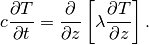
This equation is solved numerically to calculate the soil, snow, and
surface water temperatures for a fifteen-layer soil column with up to
five overlying layers of snow and a single surface water layer with the
boundary conditions of  as the heat flux into the top soil,
snow, and surface water layers from the overlying atmosphere (section
6.1) and zero heat flux at the bottom of the soil column. The
temperature profile is calculated first without phase change and then
readjusted for phase change (section 6.2).
as the heat flux into the top soil,
snow, and surface water layers from the overlying atmosphere (section
6.1) and zero heat flux at the bottom of the soil column. The
temperature profile is calculated first without phase change and then
readjusted for phase change (section 6.2).
6.1. Numerical Solution¶
The soil column is discretized into fifteen layers (Table 6.1) where the
depth of soil layer  , or node depth,
, or node depth,  (m), is
(m), is
(5)¶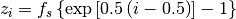
where 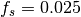 is a scaling factor. The thickness of each
layer  (m) is
(m) is
(6)¶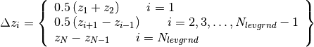
where 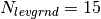 is the number of soil layers. The depths
at the layer interfaces  (m) are
(m) are
(7)¶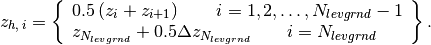
The exponential form of equation is to obtain more soil layers near the soil surface where the soil water gradient is generally strong (section 7.4).
Table 6.1. Soil layer structure.
Layer node depth ( ), thickness ( ),
and depth at layer interface ( ) for fifteen-layer
soil column. All in meters.
| Layer | |
|
|
|---|---|---|---|
| 1 (top) | 0.0071 | 0.0175 | 0.0175 |
| 2 | 0.0279 | 0.0276 | 0.0451 |
| 3 | 0.0623 | 0.0455 | 0.0906 |
| 4 | 0.1189 | 0.0750 | 0.1655 |
| 5 | 0.2122 | 0.1236 | 0.2891 |
| 6 | 0.3661 | 0.2038 | 0.4929 |
| 7 | 0.6198 | 0.3360 | 0.8289 |
| 8 | 1.0380 | 0.5539 | 1.3828 |
| 9 | 1.7276 | 0.9133 | 2.2961 |
| 10 | 2.8646 | 1.5058 | 3.8019 |
| 11 | 4.7392 | 2.4826 | 6.2845 |
| 12 | 7.8298 | 4.0931 | 10.3775 |
| 13 | 12.9253 | 6.7484 | 17.1259 |
| 14 | 21.3265 | 11.1262 | 28.2520 |
| 15 (bottom) | 35.1776 | 13.8512 | 42.1032 |
The overlying snow pack is modeled with up to five layers depending on
the total snow depth. The layers from top to bottom are indexed in the
Fortran code as 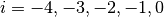, which permits the accumulation
or ablation of snow at the top of the snow pack without renumbering the
layers. Layer 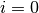 is the snow layer next to the soil surface and
layer 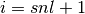 is the top layer, where the variable 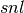
is the negative of the number of snow layers. The number of snow layers
and the thickness of each layer is a function of snow depth
 (m) as follows.
(m) as follows.
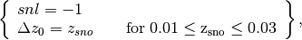
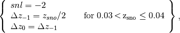
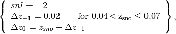
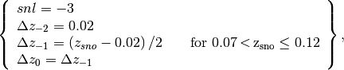
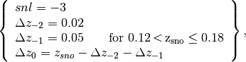
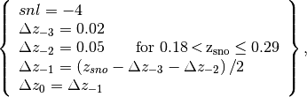
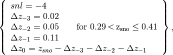
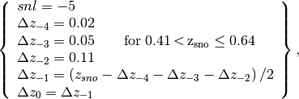
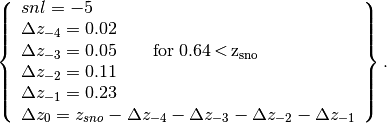
The node depths, which are located at the midpoint of the snow layers, and the layer interfaces are both referenced from the soil surface and are defined as negative values
(8)¶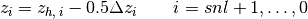
(9)¶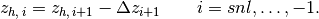
Note that 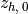 , the interface between the bottom snow
layer and the top soil layer, is zero. Thermal properties (i.e.,
temperature  [K]; thermal conductivity
[K]; thermal conductivity
 [W m-1 K-1];
volumetric heat capacity 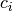 [J m-3
K-1]) are defined for soil layers at the node depths
(Figure 6.1) and for snow layers at the layer midpoints. When present,
snow occupies a fraction of a grid cell’s area, therefore snow depth
represents the thickness of the snowpack averaged over only the snow
covered area. The grid cell average snow depth is related to the depth
of the snow covered area as 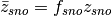 . By
default, the grid cell average snow depth is written to the history
file.
[W m-1 K-1];
volumetric heat capacity 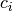 [J m-3
K-1]) are defined for soil layers at the node depths
(Figure 6.1) and for snow layers at the layer midpoints. When present,
snow occupies a fraction of a grid cell’s area, therefore snow depth
represents the thickness of the snowpack averaged over only the snow
covered area. The grid cell average snow depth is related to the depth
of the snow covered area as 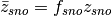 . By
default, the grid cell average snow depth is written to the history
file.
The heat flux  (W m-2) from layer
to layer
(W m-2) from layer
to layer  is
is
(10)¶![F_{i} =-\lambda \left[z_{h,\, i} \right]\left(\frac{T_{i} -T_{i+1} }{z_{i+1} -z_{i} } \right)](../../_images/math/e3fbb5f3f062399b1660bd46d8c5cb277bb5a265.png)
where the thermal conductivity at the interface 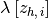 is
(11)¶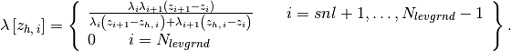
These equations are derived, with reference to Figure 6.1, assuming
that the heat flux from (depth ) to the
interface between and (depth )
equals the heat flux from the interface to (depth
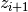 ), i.e.,
(12)¶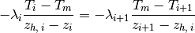
where  is the temperature at the interface of layers
and .
is the temperature at the interface of layers
and .
Figure 6.1. Schematic diagram of numerical scheme used to solve for soil temperature.
Shown are three soil layers,  , , and .
The thermal conductivity , specific heat capacity
, and temperature
, , and .
The thermal conductivity , specific heat capacity
, and temperature  are defined at the layer node depth
. is the interface temperature. The thermal
conductivity 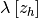 is defined at the
interface of two layers
are defined at the layer node depth
. is the interface temperature. The thermal
conductivity 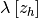 is defined at the
interface of two layers
 . The layer thickness is
. The layer thickness is  . The heat fluxes
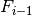 and are defined as positive upwards.
. The heat fluxes
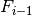 and are defined as positive upwards.
The energy balance for the 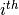 layer is
(13)¶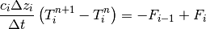
where the superscripts  and
and  indicate values at the
beginning and end of the time step, respectively, and
indicate values at the
beginning and end of the time step, respectively, and  is the time step (s). This equation is solved using the Crank-Nicholson
method, which combines the explicit method with fluxes evaluated at
(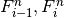 ) and the implicit method with
fluxes evaluated at (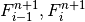 )
is the time step (s). This equation is solved using the Crank-Nicholson
method, which combines the explicit method with fluxes evaluated at
(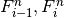 ) and the implicit method with
fluxes evaluated at (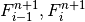 )
(14)¶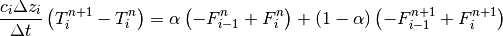
where 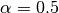, resulting in a tridiagonal system of equations
(15)¶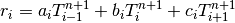
where 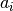 , 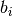 , and are the
subdiagonal, diagonal, and superdiagonal elements in the tridiagonal
matrix and  is a column vector of constants. When surface
water is present, the equation for the top soil layer has an additional
term representing the surface water temperature; this results in a four
element band-diagonal system of equations.
is a column vector of constants. When surface
water is present, the equation for the top soil layer has an additional
term representing the surface water temperature; this results in a four
element band-diagonal system of equations.
For the top soil layer  , top snow layer , or
surface water layer, the heat flux from the overlying atmosphere
(W m-2, defined as positive into the surface)
is
, top snow layer , or
surface water layer, the heat flux from the overlying atmosphere
(W m-2, defined as positive into the surface)
is
(16)¶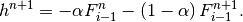
The energy balance for these layers is then
(17)¶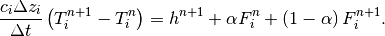
The heat flux at may be approximated as follows
(18)¶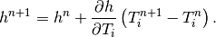
The resulting equations are then
(19)¶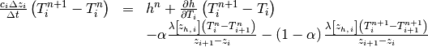
For the top snow layer, , the coefficients are
(20)¶
(21)¶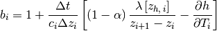
(22)¶
(23)¶
where
(24)¶
The heat flux into the snow surface from the overlying atmosphere
is
(25)¶
where is the solar radiation absorbed
by the top snow layer (section 3.2.1),
is the longwave radiation absorbed by the snow (positive toward the
atmosphere) (section 4.2),  is the sensible heat flux
from the snow (Chapter 5), and is the latent
heat flux from the snow (Chapter 5). The partial derivative of the heat
flux with respect to temperature is
is the sensible heat flux
from the snow (Chapter 5), and is the latent
heat flux from the snow (Chapter 5). The partial derivative of the heat
flux with respect to temperature is
(26)¶
where the partial derivative of the net longwave radiation is
(27)¶
and the partial derivatives of the sensible and latent heat fluxes are
given by equations and for non-vegetated surfaces, and by equations and
for vegetated surfaces.  is the Stefan-Boltzmann constant
(W m-2 K-4) (Table 2.6) and
is the Stefan-Boltzmann constant
(W m-2 K-4) (Table 2.6) and  is the ground emissivity (section 4.2). For
purposes of computing and , the term
is arbitrarily assumed to be
is the ground emissivity (section 4.2). For
purposes of computing and , the term
is arbitrarily assumed to be
(28)¶
where and are the latent heat of sublimation and vaporization, respectively (J kg-1) (Table 2.6), and and are the liquid water and ice contents of the top snow/soil layer, respectively (kg m-2) (Chapter 7).
For the top soil layer, , the coefficients are
(29)¶
(30)¶
(31)¶
(32)¶
The heat flux into the soil surface from the overlying atmosphere
is
(33)¶
It can be seen that when no snow is present (), the expressions for the coefficients of the top soil layer have the same form as those for the top snow layer.
The surface snow/soil layer temperature computed in this way is the layer-averaged temperature and hence has somewhat reduced diurnal amplitude compared with surface temperature. An accurate surface temperature is provided that compensates for this effect and numerical error by tuning the heat capacity of the top layer (through adjustment of the layer thickness) to give an exact match to the analytic solution for diurnal heating. The top layer thickness for is given by
(34)¶
where is a tunable parameter, varying from 0 to 1, and is
taken as 0.34 by comparing the numerical solution with the analytic
solution (Z.-L. Yang 1998, unpublished manuscript).
is used in place of for
in equations -. The top snow/soil layer temperature
computed in this way is the ground surface temperature
 .
.
The boundary condition at the bottom of the snow/soil column is zero heat flux, , resulting in, for ,
(35)¶
(36)¶
(37)¶
(38)¶
(39)¶
where
(40)¶
For the interior snow/soil layers, , excluding the top soil layer,
(41)¶
(42)¶
(43)¶
(44)¶
(45)¶
where is the absorbed solar flux in layer
(section 3.2.1).
When surface water exists, the following top soil layer coefficients are modified
(46)¶
(47)¶
(48)¶
where is an additional coefficient representing the heat flux from the surface water layer. The surface water layer coefficients are
(49)¶
(50)¶
(51)¶
(52)¶
6.2. Phase Change¶
6.2.1. Soil and Snow Layers¶
Upon update, the snow/soil temperatures are evaluated to determine if phase change will take place as
(53)¶
where is the soil layer temperature after solution
of the tridiagonal equation set, and
 are the mass of ice and liquid water (kg
m-2) in each snow/soil layer, respectively, and
are the mass of ice and liquid water (kg
m-2) in each snow/soil layer, respectively, and
 is the freezing temperature of water (K) (Table 2.6). For
the freezing process in soil layers, the concept of supercooled soil
water from Niu and Yang (2006) is adopted. The supercooled soil water is
the liquid water that coexists with ice over a wide range of
temperatures below freezing and is implemented through a freezing point
depression equation
is the freezing temperature of water (K) (Table 2.6). For
the freezing process in soil layers, the concept of supercooled soil
water from Niu and Yang (2006) is adopted. The supercooled soil water is
the liquid water that coexists with ice over a wide range of
temperatures below freezing and is implemented through a freezing point
depression equation
(54)¶![w_{liq,\, \max ,\, i} =\Delta z_{i} \theta _{sat,\, i} \left[\frac{10^{3} L_{f} \left(T_{f} -T_{i} \right)}{gT_{i} \psi _{sat,\, i} } \right]^{{-1\mathord{\left/ {\vphantom {-1 B_{i} }} \right. \kern-\nulldelimiterspace} B_{i} } } \qquad T_{i} <T_{f}](../../_images/math/fd7a052bbffa34352a995c429aeda58d1b8a2bd5.png)
where is the maximum liquid water in
layer (kg m-2) when the soil temperature
is below the freezing temperature ,
is the latent heat of fusion (J kg-1)
(Table 2.6),  is the gravitational acceleration (m
s-2) (Table 2.6), and and
are the soil texture-dependent saturated matric potential
(mm) and Clapp and Hornberger (1978) exponent (section 7.4.1).
is the gravitational acceleration (m
s-2) (Table 2.6), and and
are the soil texture-dependent saturated matric potential
(mm) and Clapp and Hornberger (1978) exponent (section 7.4.1).
For the special case when snow is present (snow mass  )
but there are no explicit snow layers () (i.e., there is
not enough snow present to meet the minimum snow depth requirement of
0.01 m), snow melt will take place for soil layer if the
soil layer temperature is greater than the freezing temperature
( ).
)
but there are no explicit snow layers () (i.e., there is
not enough snow present to meet the minimum snow depth requirement of
0.01 m), snow melt will take place for soil layer if the
soil layer temperature is greater than the freezing temperature
( ).
The rate of phase change is assessed from the energy excess (or deficit)
needed to change to freezing temperature, .
The excess or deficit of energy (W m-2) is
determined as follows
(55)¶![H_{i} =\left\{\begin{array}{l} {\frac{\partial h}{\partial T} \left(T_{f} -T_{i}^{n} \right)-\frac{c_{i} \Delta z_{i} }{\Delta t} \left(T_{f} -T_{i}^{n} \right)\qquad \quad \quad \quad i=snl+1} \\ {\left(1-f_{sno} -f_{h2osfc} \right)\frac{\partial h}{\partial T} \left(T_{f} -T_{i}^{n} \right)-\frac{c_{i} \Delta z_{i} }{\Delta t} \left(T_{f} -T_{i}^{n} \right)\quad {\kern 1pt} {\kern 1pt} {\kern 1pt} {\kern 1pt} i=1} \\ {-\frac{c_{i} \Delta z_{i} }{\Delta t} \left(T_{f} -T_{i}^{n} \right)\qquad \quad \quad \quad i\ne \left\{1,snl+1\right\}} \end{array}\right\}.](../../_images/math/3ed8eef1e23ab152296896ecb0e1f9c1d76dfc84.png)
If the melting criteria is met (equation ) and , then the ice mass is readjusted as
(56)¶
If the freezing criteria is met (equation ) and , then the ice mass is readjusted for as
(57)¶
and for as
(58)¶
Liquid water mass is readjusted as
(59)¶
Because part of the energy may not be consumed in melting or released in freezing, the energy is recalculated as
(60)¶
and this energy is used to cool or warm the snow/soil layer (if ) as
(61)¶![T_{i}^{n+1} =\left\{\begin{array}{l} {T_{f} +{\frac{\Delta t}{c_{i} \Delta z_{i} } H_{i*} \mathord{\left/ {\vphantom {\frac{\Delta t}{c_{i} \Delta z_{i} } H_{i*} \left(1-\frac{\Delta t}{c_{i} \Delta z_{i} } \frac{\partial h}{\partial T} \right)}} \right. \kern-\nulldelimiterspace} \left(1-\frac{\Delta t}{c_{i} \Delta z_{i} } \frac{\partial h}{\partial T} \right)} \qquad \quad \quad \quad \quad \quad \, i=snl+1} \\ {T_{f} +{\frac{\Delta t}{c_{i} \Delta z_{i} } H_{i*} \mathord{\left/ {\vphantom {\frac{\Delta t}{c_{i} \Delta z_{i} } H_{i*} \left(1-\left(1-f_{sno} -f_{h2osfc} \right)\frac{\Delta t}{c_{i} \Delta z_{i} } \frac{\partial h}{\partial T} \right)}} \right. \kern-\nulldelimiterspace} \left(1-\left(1-f_{sno} -f_{h2osfc} \right)\frac{\Delta t}{c_{i} \Delta z_{i} } \frac{\partial h}{\partial T} \right)} \qquad i=1} \\ {T_{f} +\frac{\Delta t}{c_{i} \Delta z_{i} } H_{i*} \qquad \quad \quad \quad \quad \quad \, i\ne \left\{1,snl+1\right\}} \end{array}\right\}.](../../_images/math/4ee8185404f94945d456776fa7a6b175ed64e9da.png)
For the special case when snow is present (), there
are no explicit snow layers (), and
(melting), the snow mass
 (kg m-2) is reduced according to
(kg m-2) is reduced according to
(62)¶
The snow depth is reduced proportionally
(63)¶
Again, because part of the energy may not be consumed in melting, the
energy for the surface soil layer is recalculated as
(64)¶
If there is excess energy (), this energy becomes available to the top soil layer as
(65)¶
The ice mass, liquid water content, and temperature of the top soil layer are then determined from equations , , and using the recalculated energy from equation . Snow melt (kg m-2 s-1) and phase change energy (W m-2) for this special case are
(66)¶
(67)¶
The total energy of phase change (W m-2) for the snow/soil column is
(68)¶
where
(69)¶
The total snow melt  (kg m-2
s-1) is
(kg m-2
s-1) is
(70)¶
where
(71)¶
The solution for snow/soil temperatures conserves energy as
(72)¶
where  is the ground heat flux (section 5.4).
is the ground heat flux (section 5.4).
6.2.2. Surface Water¶
Phase change of surface water takes place when the surface water
temperature,  , becomes less than . The
energy available for freezing is
, becomes less than . The
energy available for freezing is
(73)¶
where is the volumetric heat capacity of water, and is the depth of the surface water layer. If then is removed from surface water and added to the snow column as ice
(74)¶
(75)¶
The snow depth is adjusted to account for the additional ice mass
(76)¶
If is greater than  , the excess heat
is used to
cool the snow layer.
, the excess heat
is used to
cool the snow layer.
6.3. Soil and Snow Thermal Properties¶
The thermal and hydraulic (section 6.3 and 7.4.1) properties of the soil
are assumed to be a weighted combination of the mineral and organic
properties of the soil (Lawrence and Slater 2008). The soil layer
organic matter fraction  is
is
(77)¶
Soil thermal conductivity (W m-1
K-1) is from Farouki (1981)
(78)¶
where is the saturated thermal conductivity, is the dry thermal conductivity, is the Kersten number, is the wetness of the soil with respect to saturation, and W m-1 K-1 is the thermal conductivity assumed for the deep ground layers (typical of saturated granitic rock; Clauser and Huenges, 1995). For glaciers and wetlands,
(79)¶
where  and are the
thermal conductivities of liquid water and ice, respectively (Table
2.6). The saturated thermal conductivity (W
m-1 K-1) depends on the thermal
conductivities of the soil solid, liquid water, and ice constituents
and are the
thermal conductivities of liquid water and ice, respectively (Table
2.6). The saturated thermal conductivity (W
m-1 K-1) depends on the thermal
conductivities of the soil solid, liquid water, and ice constituents
(80)¶
where the thermal conductivity of soil solids varies with the sand, clay, and organic matter content
(81)¶
where the mineral soil solid thermal conductivity is
(82)¶
and W m-1 K-1 (Farouki, 1981). is the volumetric water content at saturation (porosity) (section 7.4.1).
The thermal conductivity of dry soil is
(83)¶
where the thermal conductivity of dry mineral soil (W m-1 K-1) depends on the bulk density (kg m-3) as
(84)¶
and W m-1 K-1 (Farouki, 1981) is the dry thermal conductivity of organic matter. The Kersten number is a function of the degree of saturation and phase of water
(85)¶
where
(86)¶
Thermal conductivity (W m-1
K-1) for snow is from Jordan (1991)
(87)¶
where is the thermal conductivity of air (Table
2.6) and  is the bulk density of snow (kg
m-3)
is the bulk density of snow (kg
m-3)
(88)¶
The volumetric heat capacity (J m-3 K-1) for soil is from de Vries (1963) and depends on the heat capacities of the soil solid, liquid water, and ice constituents
(89)¶
where and are the specific heat capacities (J kg-1 K-1) of liquid water and ice, respectively (Table 2.6). The heat capacity of soil solids (J m-3 K-1) is
(90)¶
where the heat capacity of mineral soil solids
 (J m-3 K-1) is
(J m-3 K-1) is
(91)¶
where J m-3 K-1 is the heat capacity of bedrock and J m-3 K-1 (Farouki, 1981) is the heat capacity of organic matter. For glaciers, wetlands, and snow
(92)¶
For the special case when snow is present () but
there are no explicit snow layers (), the heat capacity of
the top layer is a blend of ice and soil heat capacity
(93)¶
where is calculated from equation or .
Todo
fill in the above - should be calculated form equation (6.89) or (6.92)